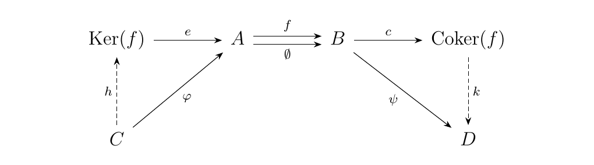
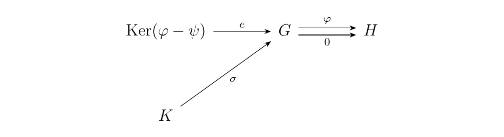
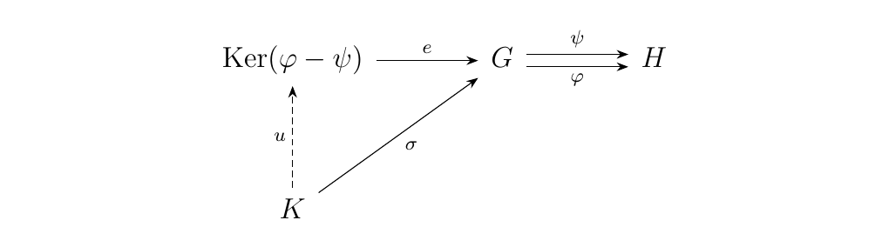
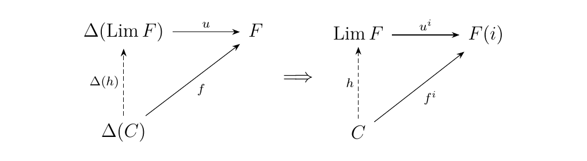

8.3. Preabelian Categories
In Ab, kernels and cokernels exists for every group homomorphism. \
First, recall their definitions.
Let \(\phi: G \to H\) be a group homomorphism. Then a kernel is an equalizer of \(\phi: G \to H\) and \(0: G \to H\), where \(0\) maps everything to \(e_H\), while a cokernel is a coequalizer of \(\phi: G \to H\) and \(0: G \to H\).
In Ab, we set \(\coker(\phi) \cong H/\im(\phi)\) while \(\ker(\phi)\) is the natural normal subgroup of \(G\).
Note that the necessary conditions for creating kernels and cokernels is (1) the existence of a zero object and (2) the existence of equalizers. If we have these ingredients, can we extend the concept of kernels and cokernels to additive categories? We can.
Let \(\cc\) be a category with a zero object as well as equalizers and coequalizers. Let \(f: A \to B\) be a morphism between two objects in \(\cc\). We define
-
kernel to be the equalizer of \(f\) and \(\emptyset_A^B: A \to B\), the zero morphism,
-
cokernel of \(f\) to be the coequalizer of \(f\) and \(\emptyset_A^B: A \to B\).
In diagrams, we have that \  end{definition}
In the category Grp, we certainly have a zero object \(z = \{e\}\). Observe that for a given morphism \(\phi: G \to H\), we can also form the equalizer of \(\phi\) by considering the pair \((\ker(\phi), e: \ker(\phi) \to G)\) where \(\ker(\phi) \subset G\) and \(e\) being inclusion. For the same morphism, we can form the coequalizer be considering the pair \((\overline{N}, c: H \to H/\overline{N})\) where
where \(\lambda = \{H' \subset H \mid \im(\phi) \subset H' \text{ and } H' \normal H\}\). It's a simple exercise to show that these satisfy the necessary universal properties.
\textcolor{NavyBlue}{However, it's important to observe the subtle difference between the behaviors of Grp and Ab}. Because every subgroup of an abelian group is normal, we know that in the case of Ab, \(\overline{N} = \im(\phi)\) So the coequalizer becomes
It turns out that kernels and cokernels are extremely flexible in additive categories.
Suppose \(\cc\) is an additive category. Then the following are equivalent.
-
[\((i)\)] \(\cc\) has equalizers and coequalizers.
-
[\((ii)\)] \(\cc\) has kernels and cokernels.
We only prove the statement for equalizers as the proof will be self-dual.
First note that \((i) \implies (ii)\) is immediate because a kernel is an equalizer with a morphism \(\phi\) and a zero morphism. To show \((ii) \implies (i)\), suppose that we have kernels for every morphism in \(\cc\). Then consider two morphisms \(\phi, \psi: G \to H\). We can combine these two morphisms by our group operation on \(\hom(G, H)\) and consider \(\phi - \psi\). Since we can take kernels, we take the kernel of this morphism. \ We now argue that this is the equalizer of \(\phi, \psi\). First observe that
using bilinearity of \(\circ\). Hence we see that \(e\) equalizes \(\phi\) and \(\psi\), although we now need to demonstrate its universal property.
Now suppose that there exists an object \(K\) equipped with a morphism \(\sigma: K \to G\) such that \(\psi \circ \sigma = \psi \circ \phi\). \  However, note that
Since \(e: \ker(\phi) \to G\) is kernel, we note that its universal property implies that because \((\phi - \psi)\circ \sigma = 0\) that there must exists a unique morphism \(u: K \to \ker(\phi)\) such that \(e \circ u = \sigma\). Thus we have shown the diagram below \  must hold so that \((\ker(\phi), e: \ker(\phi) \to G)\), is actually an equalizer!
Note that we've once more utilized the bilinearity of \(\circ\) to construct the above proof, which again reminds us that the assumptions we've made so far are necessary and useful. The above proof now motivates the following definition.
\begin{definition} Let \(\cc\) be an additive category. Then we say \(\cc\) is preabelian if it has kernels and cokernels; or, equivalently, if it has all equalizers and coequalizers.
What we have on our hands now is a very nice category where (1) finite biproducts exist and (2) all equalizers and coequalizers exist. If we recall from our experience with limits, this automatically grants us the following proposition.
A preabelian category has all finite limits and finite colimits.
If a category has finite products and equalizers, it has finite limits. If it has finite coproducts and coequalizers, it has finite colimits. This is Theorem \ref{products_equalizers_all_limits}.
The fact that there exist finite limits and colimits is extremely convenient in preabelian categories.
Let \(\cc\) be a preabelian category. Let \(J\) be a connected category and suppose \(F: J \to \cc\) is a functor. Then
Recall the limit satisfies universal property \  for every object \(C\) equipped with a family of morphisms \(f^i: C \to F(i)\). Construct the family of morphisms
where \(\emptyset_i^j: F(i) \to F(j)\) is the unique zero morphism from \(F(i)\) to \(F(j)\). Then by the universal property of the limit, for each \(i \in J\), there exists a unique morphism \(h_i: F(i) \to \Lim F\) such that the diagram below commutes. \ That is, we have \(u^j \circ h_i = f_i^j\). We now argue that we have a colimit on our hands. Specifically, suppose \(D\) is an object of \(\cc\) equipped with a family of morphisms \(g_j: F(j) \to D\). Then observe that we can supply a morphism
where the addition operation is from the group structure of \(\hom(\Lim F, D)\), such that the diagram below commutes. \ This diagram commutes since
where we utilized the bilinearity of the composition operator. Thus we see that \(\Lim F\) is behaving just like a colimit!
The only thing we must verify at this point is that this morphism is unique. Towards that goal, suppose that \(\ell: \Lim F \to D\) is another morphism such that \(\ell \circ h_j = g_j\). Recall that \(u^i\circ h_i= 1_{F(i)}\), so that \(h_i\) is a monomorphism. Then observe that we can take the image of the map
under the contravariant hom functor to get an epic group homomorphism \ between abelian groups, as \(\circ\) obeys bilinearity properties. By the first isomorphism theorem we then have that
Now we want to show that this map is also injective, because then we could observe that since
that
But it seems like we don't have enough to show that at the moment...